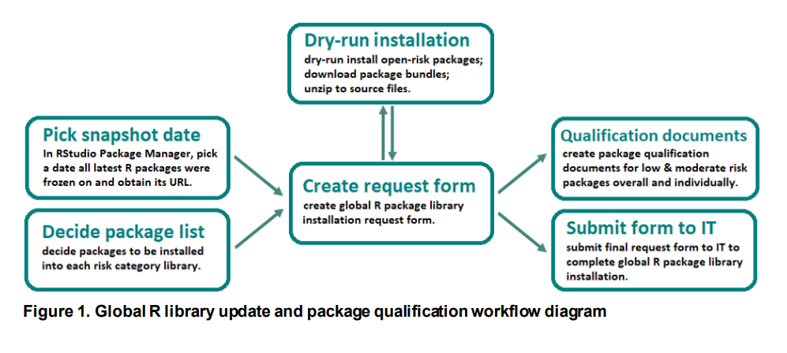
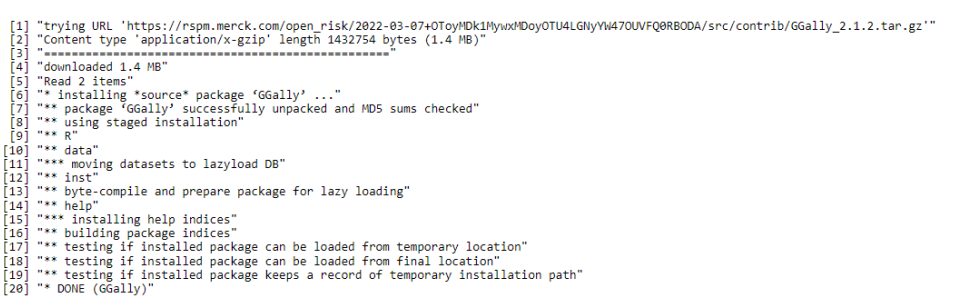
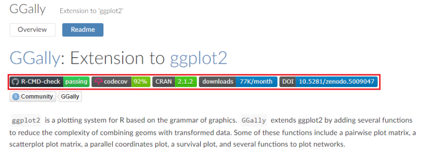
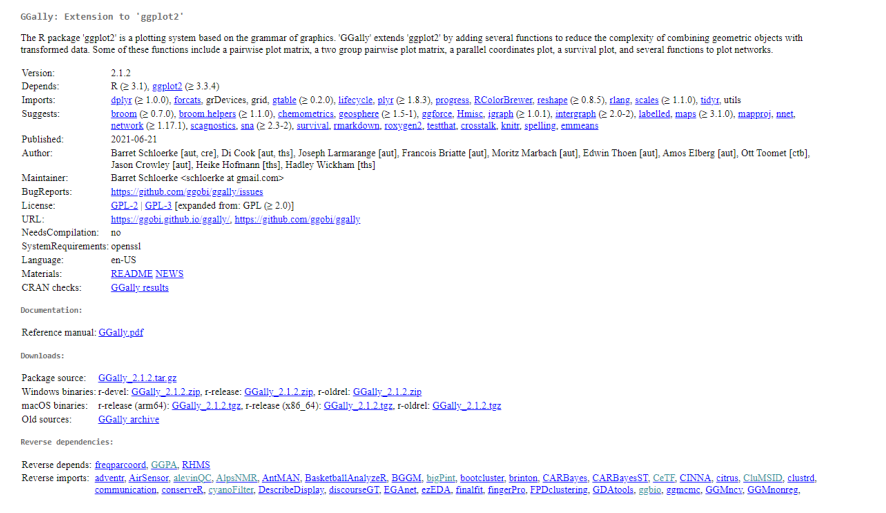

<p><strong>Introduction</strong></p>
<p>There has been a growing interest in pharmaceutical industry to use R for clinical trial data analysis and reporting (A&amp;R). Using R for regulatory submission purposes requires careful qualification of R packages given that the open-source packages differ in their quality of development. Many cross-industry initiatives including R Validation Hub and TransCelerate have published framework for qualifying R packages to be used in a regulatory setting (Nicholls, Bargo, &amp; Sims, 2020) (Amoruccio, Lee, &amp; Woodie, 2021). Our organization has been exploring the use of R in a regulatory setting for the past few years. A framework has been developed internally for qualifying external R packages that incorporates elements from both R Validation Hub and TransCelerate framework. This framework is currently being used to qualify both internally developed and externally sourced R packages for use in clinical trial A&amp;R. In this document, we demonstrate this risk-based package qualification framework using the GGally R package. We provide the workflow as well as relevant details regarding the package qualification process used to qualify GGally as a moderate risk R package. We hope this inspires other organizations to use R in a regulatory setting as well as generate discussion to improve our existing framework.</p>
<p><strong>Risk-Based Package Qualification Framework</strong></p>
<p>The R package qualification framework deployed at Merck is based on validation as defined by FDA (The R Foundation for Statistical Computing c/o Institute for Statistics and Mathematics, 2021). The goal of the framework is to create documentation that contains qualification details of R package based on pre-specified criteria. The framework employs a risk-based strategy to qualify R packages based on the type of A&amp;R deliverable being generated. The types of deliverables and their associated R package risk levels are shown in Table 1.</p>
<table style="width:100%;">
<colgroup>
<col width="42%" />
<col width="32%" />
<col width="24%" />
</colgroup>
<thead>
<tr class="header">
<th>Type of Deliverables</th>
<th>Example</th>
<th>R Package Risk</th>
</tr>
</thead>
<tbody>
<tr class="odd">
<td>External (electronic Common Technical Document (eCTD))</td>
<td>Clinical Study Report (CSR) and submission package;Drug labeling;Agency request</td>
<td>Low</td>
</tr>
<tr class="even">
<td>External (non-eCTD); Internal (Outside Department)</td>
<td>Data monitoring committee; Manuscript &amp; publication (using clinical data); Internal committee review or presentation</td>
<td>Moderate or Low</td>
</tr>
<tr class="odd">
<td>Exploration/Within Department</td>
<td>Data Exploration; Data Quality Checks; Exploratory Analysis</td>
<td>Open, Moderate, or Low</td>
</tr>
</tbody>
</table>
<p>Table 1. Examples of deliverables and respective risk categories of the R packages</p>
<p>The pre-specified criteria used to qualify a R package into the desired risk category are defined as:</p>
<ul>
<li><p>c1: Package is developed and maintained by a trusted vendor.</p></li>
<li><p>c2: Package is user-facing with sufficient software development lifecycle (SDLC) evidence equivalent to internal SDLC requirement.</p></li>
<li><p>c3: Package is not user-facing and all packages dependent on this R package are qualified.</p></li>
<li><p>c4: Package is user-facing with additional internal work to complete necessary steps following internal SDLC requirement.</p></li>
<li><p>c5: Package maintained by a trusted person or organization.</p></li>
</ul>
<p>An R package can be qualified under low risk category if it meets any of the first four criteria i.e., c1-c4. For moderate risk category the R package needs to meet any of the five criteria i.e., c1- c5. Any R package used for exploratory purposes and not qualified under either low-risk or moderate-risk category is categorized as open-risk. Any other R package deployed by users from external sources such as Comprehensive R Archive Network (CRAN) or other repositories is automatically categorized as open risk.</p>
<p><strong>R Package Qualification Workflow</strong></p>
<p>Within our organization a shared baseline strategy recommended by RStudio is followed to manage a reproducible R environment (RStudio, 2020). The defining characteristic of shared baseline strategy is that R package availability is tied to R installations using site-wide libraries. The use of scheduled updates to the site-wide libraries allows all users to use the same installed packages, thereby creating a baseline environment to share and re-run work. An R package within our organization is available through a regularly updated site-wide library installation called Global R library. The global R library is a set of directories containing installed R packages and their dependencies. There are 3 risk levels within the global R library corresponding to the risk category used in package qualification. The global R library is nested and independent, with all low-risk packages included in the moderate-risk library, and all moderate-risk packages included in the open-risk library. Our organization employs RStudio Package Manager (RSPM) as the R package repository server to host source code to install the packages in global R library. A high-level global R library update and package qualification workflow is summarized below (Figure 1).</p>
<div class="float">

<div class="figcaption">Figure 1. Global R library update and package qualification workflow diagram</div>
</div>
<p><strong>GGally Package Qualification</strong></p>
<p>GGally is an R package that extends ggplot2 R package functionality by adding several functions to reduce the complexity of combining geometric objects (geoms) with transformed data (Schloerke, 2020). Based on a request to use the GGally package in a publication, the package was qualified under moderate risk category. The steps in the qualification process followed were:</p>
<ol style="list-style-type: decimal">
<li><p>Review package documentation to determine qualifying criteria. It was determined that this package can be qualified using the c2 and c5 criteria.</p></li>
<li><p>Perform a dry-run installation for global R library update, with GGally set as moderate risk.</p></li>
<li><p>Check installation log for errors / warning messages (Figure 2):</p></li>
</ol>
<div class="float">

<div class="figcaption">Figure 2. GGally dry run installation log snippet.</div>
</div>
<ol start="4" style="list-style-type: decimal">
<li>Check package code coverage and associated SDLC documentation (criterion c2) (Figure 3, Figure 4):</li>
</ol>
<div class="float">

<div class="figcaption">Figure 3. Code coverage statistics of GGally obtained from internal RSPM server.</div>
</div>
<div class="float">

<div class="figcaption">Figure 4. GGally SDLC documentation from CRAN.</div>
</div>
<ol start="5" style="list-style-type: decimal">
<li>Cross-check against internal database (White List) containing trusted package authors / organizations (criterion c5). R Package Author White List is a list of trusted R package authors (person or organization) identified by our organization’s Subject Matter Experts (SME).</li>
<li>Run program using internally developed R package to generate the qualification document. The details included in the qualification document are as shown below:</li>
</ol>
<p><u>Package Qualification – “GGally”</u></p>
<p>Qualification Overview</p>
<p>The purpose of this document is to demonstrate that GGally, when used in a qualified fashion, can support the appropriate regulatory requirements for validated systems, thus ensuring that resulting electronic records are “trustworthy, reliable and generally equivalent to paper records.”</p>
<table>
<tbody>
<tr class="odd">
<td>Package</td>
<td>GGally</td>
</tr>
<tr class="even">
<td>Risk level</td>
<td>moderate</td>
</tr>
<tr class="odd">
<td>Qualification date</td>
<td>2022-03-14</td>
</tr>
<tr class="even">
<td>Qualification criteria</td>
<td>c2, c5</td>
</tr>
</tbody>
</table>
<p><u>Package Information</u></p>
<table>
<colgroup>
<col width="22%" />
<col width="77%" />
</colgroup>
<tbody>
<tr class="odd">
<td>package</td>
<td>GGally</td>
</tr>
<tr class="even">
<td>version</td>
<td>2.1.2</td>
</tr>
<tr class="odd">
<td>author</td>
<td>Barret Schloerke [aut, cre], Di Cook [aut, ths], Joseph Larmarange [aut], Francois Briatte [aut], Moritz Marbach [aut], Edwin Thoen [aut], Amos Elberg [aut], Ott Toomet [ctb], Jason Crowley [aut], Heike Hofmann [ths], Hadley Wickham [ths]</td>
</tr>
<tr class="even">
<td>maintainer</td>
<td>Barret Schloerke &lt;schloerke@gmail.com&gt;</td>
</tr>
<tr class="odd">
<td>license</td>
<td>GPL (&gt;=2.0)</td>
</tr>
<tr class="even">
<td>description</td>
<td>The R package ‘ggplot2’ is a plotting system based on the grammar of graphics. ‘GGally’ extends ‘ggplot2’ by adding several functions to reduce the complexity of combining geometric objects with transformed data. Some of these functions include a pairwise plot matrix, a two group pairwise plot matrix, a parallel coordinates plot, a survival plot, and several functions to plot networks.</td>
</tr>
<tr class="odd">
<td>url</td>
<td><a href="https://ggobi.github.io/ggally/" class="uri">https://ggobi.github.io/ggally/</a>; <a href="https://github.com/ggobi/ggally" class="uri">https://github.com/ggobi/ggally</a></td>
</tr>
<tr class="even">
<td>bugreports</td>
<td><a href="https://github.com/ggobi/ggally/issues" class="uri">https://github.com/ggobi/ggally/issues</a></td>
</tr>
<tr class="odd">
<td>systemrequirements</td>
<td>openssl</td>
</tr>
</tbody>
</table>
<p>Qualification Details</p>
<p>Criteria C2</p>
<p>Criteria c2: There is sufficient evidence of publicly available software development lifecycle information, including authors, source code, test cases, release notes, and user guides. To qualify GGally, we reviewed and confirmed the R package GGally follows a proper software development lifecycle.</p>
<ul>
<li><p>Each exported (user facing) function contains documentation.</p></li>
<li><p>The released version has a unique version number on CRAN.</p></li>
<li><p>The R package development use a version control system. <a href="https://github.com/ggobi/ggally" class="uri">https://github.com/ggobi/ggally</a></p></li>
<li><p>Proper testing has been provided with source code. The code coverage is 86%.</p></li>
<li><p>The R package passed a series compliance check through CRAN.</p></li>
<li><p>The R package has a maintainer, Barret Schloerke schloerke@gmail.com</p></li>
<li><p>The R package has a bug report approach using <a href="https://github.com/ggobi/ggally/issues" class="uri">https://github.com/ggobi/ggally/issues</a></p></li>
<li><p>The R package can be properly built and installed on system.</p></li>
<li><p>Source code archive files (“tarballs”) are made available via the CRAN mirror infrastructure.</p></li>
<li><p>All current and historical released versions of this R package are available from the main CRAN server (<a href="http://cran.r-project.org/src/base/">http://cran.r-project.org/src/base/)</a>) and its worldwide mirrors <a href="http://cran.rproject.org/mirrors.html">http://cran.rproject.org/mirrors.html).</a>.)</p></li>
</ul>
<p>Criteria C5</p>
<ul>
<li><p>Criteria c5: Package maintained by a trusted person or organization listed in R package author white list</p></li>
<li><p>The released version has a unique version number on CRAN.</p></li>
<li><p>The R package passed a series compliance check through CRAN.</p></li>
<li><p>The R package has a maintainer, Barret Schloerke schloerke@gmail.com</p></li>
<li><p>The R package can be properly built and installed on system.</p></li>
<li><p>Source code archive files (“tarballs”) are made available via the CRAN mirror infrastructure.</p></li>
<li><p>All current and historical released versions of this R package are available from the main CRAN server (<a href="http://cran.r-project.org/src/base/">http://cran.r-project.org/src/base/)</a>) and its worldwide mirrors <a href="http://cran.rproject.org/mirrors.html">http://cran.rproject.org/mirrors.html).</a>.)</p></li>
</ul>
<ol start="7" style="list-style-type: decimal">
<li>After the qualification document is generated, panel compromising of a qualified statistician and a statistical programmer reviews the document for accuracy and validity. After the qualification was completed, GGally was included in the moderate risk category update for global R library formal installation.</li>
</ol>
<p><strong>Conclusion</strong></p>
<p>A risk-based R package qualification process has been deployed at Merck to classify R packages based on generated A&amp;R deliverables. This process has been automated using internally developed R package to both streamline the process as well as reduce any human errors. The qualification of GGally R package under moderate risk category using the qualification process, demonstrates the useability of the qualification framework for qualifying R packages in a regulatory setting. There is ongoing work to enhance the internally developed R package used in package qualification framework to further automate the process. We are also working on defining the pre-specified criteria used to qualify an organization or group of vendors as trusted source, thereby reducing the burden of qualifying individual packages.</p>
<p><strong>References</strong></p>
<p>Amoruccio, V. J., Lee, M., &amp; Woodie, D. (2021). A TransCelerate Initiative – How Can You Modernize Your Statistical Environment. PharmaSUG 2021. SI-028. PharmaSUG. Retrieved April 11, 2022, from <a href="https://www.pharmasug.org/proceedings/2021/SI/PharmaSUG-2021-SI028.pdf">https://www.pharmasug.org/proceedings/2021/SI/PharmaSUG-2021-SI028.pdf</a> Nicholls, A., Bargo, P. R., &amp; Sims, J. (2020, January 23). A risk-based approach for assessing R package accuracy within a validated infrastructure. Retrieved April 11, 2022, from <a href="https://www.pharmar.org:" class="uri">https://www.pharmar.org:</a> <a href="https://www.pharmar.org/white-paper/" class="uri">https://www.pharmar.org/white-paper/</a> RStudio. (2020). Shared Baselines. (RStudio) Retrieved April 11, 2022, from Reproducible Environments: <a href="https://environments.rstudio.com/shared" class="uri">https://environments.rstudio.com/shared</a> Schloerke, B. (2020, March 25). GGally: Extension to ggplot2. Retrieved April 11, 2022, from <a href="https://www.rdocumentation.org/packages/GGally/versions/1.5.0" class="uri">https://www.rdocumentation.org/packages/GGally/versions/1.5.0</a> The R Foundation for Statistical Computing c/o Institute for Statistics and Mathematics. (2021, October 18). R: Regulatory Compliance and Validation Issues, A Guidance Document for the Use of R in Regulated Clinical Trial Environments. Vienna, Austria. Retrieved April 11, 2022, from <a href="https://www.r-project.org/doc/R-FDA.pdf" class="uri">https://www.r-project.org/doc/R-FDA.pdf</a></p>
<p><strong>Corresponding Author Contact</strong></p>
<p>We encourage feedback to improve our framework and processes. For any questions or feedback please reach out to preetham.palukuru@merck.com</p>
